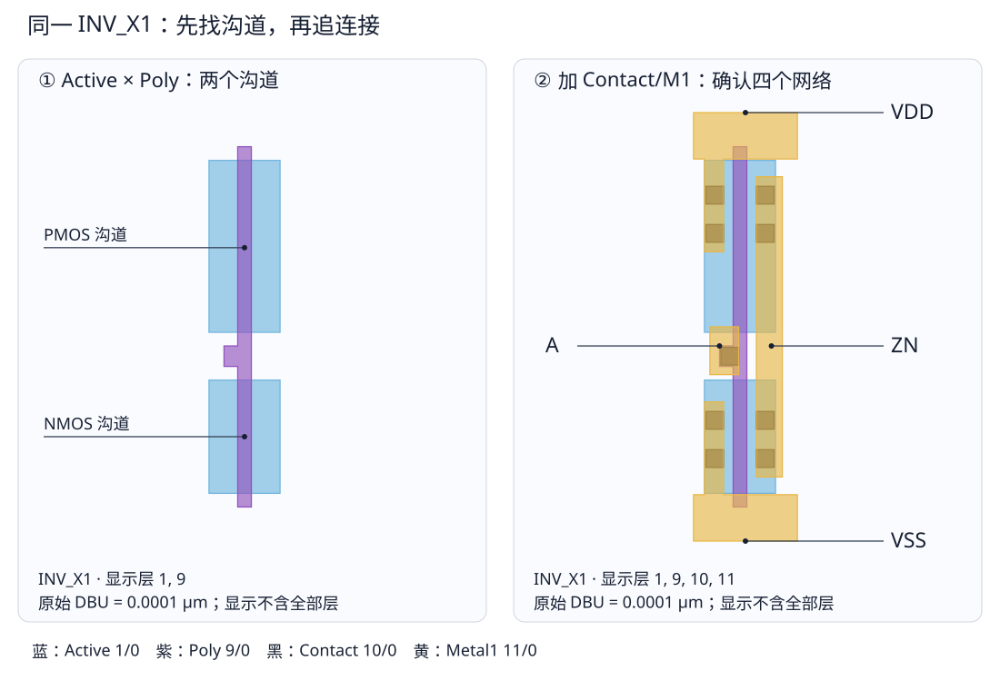

第 5 章 终端、文件与 KLayout 上手实验
把“打开版图看看”拆成可以执行、可以核对的动作
5.1 终端不是另一个仿真器
终端负责启动程序、切换目录、传参数和查看输出；真正读 GDS 的是 KLayout，算电路波形的是 SPICE 仿真器。相对路径从当前工作目录出发，绝对路径从 / 出发。第一步用 pwd 确认位置，命令找不到文件时先排除目录错误。
cd /home/jasper/code/docs/std-cell
pwd
ls examples/FreePDK45/gds/INV_X1.gds
command -v klayout
command -v ngspice
python --version示例中的 $TUTORIAL_OUT 是变量，使用前必须赋值；行末 \ 表示同一条命令延续到下一行，后面不要再加空格或注释。--output 是某个程序的选项，不是所有 EDA 工具通用的语法。复制时不包含终端提示符 $。
python 和 pip 可能属于不同环境，优先使用 python -m pip。虚拟环境只隔离 Python 包，不会自动装好 ngspice/Calibre 这类外部程序。遇到缺依赖先记录解释器路径和错误，不要用 sudo 向共享环境试装。
5.2 打开一个明确的单元，不先打开整个库
klayout -l examples/FreePDK45/freepdk45.lyp \
examples/FreePDK45/gds/INV_X1.gds- GUI 中也可通过 File → Open 选择同一文件。左侧 Cells 面板选
INV_X1；若加载了多个布局，确认当前标签页。 - 使用视图的 Zoom Fit/全图显示功能让单元进入窗口。不同版本可在 View 菜单或工具栏找到相同功能，不要求死记快捷键。
- Layers 面板中的
1/0表示 layer=1、datatype=0，不是尺寸。加载提供的.lyp是加载显示方案，不会修改 GDS 中的图形或层号。 - 若只看到外框，检查层可见性、当前 cell、层次显示深度。不要立即断言 GDS 没有晶体管。
菜单依据 KLayout 官方基础操作手册；界面语言和键位可随版本/设置变化。对应条目是 Loading a File、Choosing a Cell、Changing Layer Visibility、Doing Measurements、Creating a Screenshot。下列尺寸由本地 GDS 数据库实际读取，不依赖截图缩放比例。
5.3 同一只 INV 分三轮看，不一次打开所有填充色
| 轮次 | 打开的层 | 你应回答的问题 | 先不要做什么 |
|---|---|---|---|
| 器件轮 | Active 1/0、Poly 9/0；需要时加 well/implant | Poly 穿过几块 Active？交叠尺寸是多少？ | 不要把上/下位置本身当成 PMOS/NMOS 证明 |
| 连接轮 | 再加 Contact 10/0、M1 11/0 | A 怎样到两栅？两漏怎样接到 ZN？ | 不要把金属跨越当成自动连接，必须找接触结构 |
| 体端与边界轮 | 再加 P-well 2/0、N-well 3/0、implant 4/0、5/0、边界 | 类型与 B 端在哪里得到证据？本单元是否含 tap？ | 不要把供电轨等同于井接触；无 tap 需在库/行架构中解决 |
在 Layers 面板选择图层并切换可见性；可用面板右键菜单的显示/隐藏操作，批量选层后一起隐藏。颜色不清楚时改用轮廓或减少填充，修改的是显示方案。保存每轮截图并标上文件名、层列表和 cell 名，便于和同学讨论同一个对象。

5.4 量一次 L 和 W，确认不是把图长当成沟道长度
本文件 KLayout layout.dbu=0.0001，单位是 μm/DBU，即每 DBU=0.1 nm。不要与 LibreCell 技术文件中以米表示的 db_unit 混淆。Poly 主栅条的 x 坐标是 1450～1950，栅长为 (1950-1450)×0.0001=0.050 μm。
| 待测对象 | 数据库边界（DBU） | 尺寸 | CDL 对照 |
|---|---|---|---|
| 下方 Active 与 Poly 的交叠高 | y=900～5050 | W=0.415 μm | NMOS_VTL W=0.415U |
| 上方交叠高 | y=6800～13100 | W=0.630 μm | PMOS_VTL W=0.630U |
| 栅条在电流方向的宽度 | x=1450～1950 | L=0.050 μm | 两管均 L=0.050U |
| 左下扩散接触孔之一 | x=450～1100，y=1850～2500 | 0.065 μm 方孔 | 网表没有“Contact 器件行”，它是物理连接 |
在 GUI 进入标尺/测量模式，在目标边界点击起点和终点，检查捕捉对象；必要时放大并查看图形属性。量的是边到边，不是填充图案的格子间距。若显示 0.5 μm 或 50 μm，先检查是否量错对象或看错单位，不要修改 GDS DBU 让数字“看起来正确”。
5.5 把版图坐标写成四端核对表
INV 的两块 Active 都从 x=400 延伸到 3000。栅条把每块 Active 分成左端、沟道和右端。上方左端经接触孔到 VDD，下面左端经接触孔到 VSS；两块右端通过右侧 M1 连接到 ZN；中间的 A 金属经接触孔接到 Poly。这就建立了网表两行 D/G/S 的证据，不只是“看到两个管”。
B 端不是两端扩散中随便选一个。本文件需要结合 well/implant 与 tapless 库架构判断体网络；手工数接触孔不能代替四端 LVS。
5.6 从截图退回数据：可重复导图
python examples/learning/render_walk.py
QT_QPA_PLATFORM=offscreen klayout -z -nc -rx \
-l examples/FreePDK45/freepdk45.lyp \
examples/FreePDK45/gds/INV_X1.gds \
-r examples/FreePDK45/render_layout.rb \
-rd output=/tmp/INV_X1-check.png第一条用 KLayout Python 数据库读取真实多边形，生成本页分层 SVG；第二条由 KLayout GUI 渲染器离屏导出原始截图。没有桌面不妨碍批量生成，但交互式测量仍建议你亲手做一次。OpenSchematic 电路图的复现入口保留在图谱入口。
- 提交一张只含 Active/Poly 的图，标出两只 MOS 的 W/L。
- 再提交连接轮图，分别写出 A、ZN、VDD、VSS 的路径。
- 解释为什么 Active 总宽 0.26 μm 不是本例 MOS 的 W。
核对要点
电流方向沿 x，L 量 Poly 的 x 向宽度，W 量交叠区 y 向尺寸。0.26 μm 是整个 Active 的 x 跨度，包含两侧源漏和沟道，既不是 W 也不是 L。A 接共同栅、ZN 接两漏，电源接各自左端；B 必须另查井/体接触。